공조냉동기계기사(구) (2009-07-26 기출문제)
1과목: 기계열역학
1. 기체의 초기압력이 20 kPa, 초기체적이 0.1m3인 상태에서부터 "PV=일정" 인 과정으로 체적이 0.3m3로 변했을 때의 일량은 약 얼마인가? (문제 오류로 정답이 정확하지 않습니다. 정답지를 찾지못하여 임의 정답 1번으로 설정하였습니다. 정답을 아시는 분께서는 오류 신고를 통하여 정답 입력 부탁 드립니다.)
- 2200 J
- 4000 J
- 2200 kJ
- 4000 kJ
(정답률: 알수없음)

2. 풍선에 공기 2kg이 들어 있다. 일정 압력 500 kPa 하에서 가열 팽창하여 체적이 1.2배가 되었다. 공기의 초기온도가 20℃일 때 최종온도는 약 몇 인가? (단, 기체상수 R=0.287 kJ/kgㆍK 이다.) (문제 오류로 정답이 정확하지 않습니다. 정답지를 찾지못하여 임의 정답 1번으로 설정하였습니다. 정답을 아시는 분께서는 오류 신고를 통하여 정답 입력 부탁 드립니다.)
- 32
- 53
- 79
- 92
(정답률: 알수없음)
3. 0.5kg의 어느 기체를 압축하는데 15 kJ의 일을 필요로 하였다. 이 때 12kJ의 열이 계 밖으로 손실 전달되었다. 내부에너지의 변화는 몇 kJ 인가?
- -27
- 27
- 3
- -3
(정답률: 알수없음)
4. 실제기체의 경우 압력이 0 에 가까워지면 Z=PV/RT 의 값은 어떻게 되는가? (문제 오류로 정답이 정확하지 않습니다. 정답지를 찾지못하여 임의 정답 1번으로 설정하였습니다. 정답을 아시는 분께서는 오류 신고를 통하여 정답 입력 부탁 드립니다.)
- 1에 가까워진다.
- 0에 가까워진다.
- 무한대(∞)의 값을 갖는다.
- 온도에 따라 값이 달라진다.
(정답률: 알수없음)
5. 어떤 냉동 장치에서 0℃의 물을 0℃의 얼음 1 ton으로 만드는데 40 kWh의 일이 소요되었다면, 이 냉동기의 성능계수는? (단, 물의 융해열은 334 kJ/kg 이다.) (문제 오류로 정답이 정확하지 않습니다. 정답지를 찾지못하여 임의 정답 1번으로 설정하였습니다. 정답을 아시는 분께서는 오류 신고를 통하여 정답 입력 부탁 드립니다.)
- 1:67
- 2.04
- 2.32
- 3.55
(정답률: 알수없음)
6. 압력이 일정할 때 공기 5 kg을 0℃에서 100℃까지 가열하는데 필요한 열량은 약 몇 KJ인가? (단, 공기비열 Cp(kJ/kg℃) = 1.01+0.000079t(℃) 이다.) (문제 오류로 정답이 정확하지 않습니다. 정답지를 찾지못하여 임의 정답 1번으로 설정하였습니다. 정답을 아시는 분께서는 오류 신고를 통하여 정답 입력 부탁 드립니다.)
- 102
- 476
- 490
- 507
(정답률: 알수없음)
7. 피스톤-실린더로 구성된 용기 안에 들어있는 기체의 초기체적은 0.1m3 이다 200 kPa의 일정한 압력으로 체적이 0.3m3로 변했을 때의 얼은? (문제 오류로 정답이 정확하지 않습니다. 정답지를 찾지못하여 임의 정답 1번으로 설정하였습니다. 정답을 아시는 분께서는 오류 신고를 통하여 정답 입력 부탁 드립니다.)
- 40 J
- 40 KJ
- 400J
- 400 kJ
(정답률: 알수없음)
8. 물질의 양을 1/2로 줄이면 강도성(강성적) 상태량의 값은? (문제 오류로 정답이 정확하지 않습니다. 정답지를 찾지못하여 임의 정답 1번으로 설정하였습니다. 정답을 아시는 분께서는 오류 신고를 통하여 정답 입력 부탁 드립니다.)
- 1/2로 줄어든다.
- 1/4로 줄어든다.
- 변화가 없다.
- 2배로 늘어난다.
(정답률: 알수없음)
9. 이상기체 1kg을 300K, 100kPa 에서 500K까지 "PV"= 일정"의 과정(n=1.2)을 따라 변화시켰다. 기체의 비열비는 1.3, 기체상수는 0.287 kJ/kgㆍK 라고 가정한다면 이 기체의 엔트로피 변화량은 약 및 KJ/K 인가? (문제 오류로 정답이 정확하지 않습니다. 정답지를 찾지못하여 임의 정답 1번으로 설정하였습니다. 정답을 아시는 분께서는 오류 신고를 통하여 정답 입력 부탁 드립니다.)
- -0.244
- -0.287
- -0.344
- -0.373
(정답률: 알수없음)
10. 이상기체에 대한 설명으로 옳은 것은? (문제 오류로 정답이 정확하지 않습니다. 정답지를 찾지못하여 임의 정답 1번으로 설정하였습니다. 정답을 아시는 분께서는 오류 신고를 통하여 정답 입력 부탁 드립니다.)
- 이상기체 상태방정식은 충분히 낮은 밀도를 갖는 기체에 대해 적용할 수 있다.
- 실제기체에 대해서 이상기체 상태방정식을 적용할 수 없다.
- 압축성 계수가 0일 경우는 이상기체로 간주할 수 있다.
- 공기는 항상 이상기체로 간주할 수 있다.
(정답률: 알수없음)
11. 등엔트로피 효율이 80%인 소형 공기 터빈의 출력이 270kJ/kg이다. 입구 온도는 600 K이며, 출구 압력은 100kPa이다. 공기의 정압비열은 1.004 kJ/kgㆍK, 비열비는 1.4 이다. 출구 온도(K)와 입구 압력(kPa)은 각각 얼마인가? (문제 오류로 정답이 정확하지 않습니다. 정답지를 찾지못하여 임의 정답 1번으로 설정하였습니다. 정답을 아시는 분께서는 오류 신고를 통하여 정답 입력 부탁 드립니다.)
- 약 264 K, 1774 kPa
- 약 264 K, 1842 kPa
- 약 331 K, 1774 kPa
- 약 331 K, 1842 kPa
(정답률: 알수없음)
12. 공기가 안지름 0.1 m인 관속몰 속도 0.2 m/s로 흐를 때 공기의 온도는 20℃, 압력은 100 kPa. 이상기체상수는 0.287 kJ/kgㆍK 이라면 질량유량은 약 몇 kg/s 인가? (문제 오류로 정답이 정확하지 않습니다. 정답지를 찾지못하여 임의 정답 1번으로 설정하였습니다. 정답을 아시는 분께서는 오류 신고를 통하여 정답 입력 부탁 드립니다.)
- 0.0019
- 0.0099
- 0.0119
- 0.0199
(정답률: 알수없음)
13. 대류 열전달계수와 관계가 없는 것은? (문제 오류로 정답이 정확하지 않습니다. 정답지를 찾지못하여 임의 정답 1번으로 설정하였습니다. 정답을 아시는 분께서는 오류 신고를 통하여 정답 입력 부탁 드립니다.)
- 유체의 열전도율
- 유체의 속도
- 고체의 형상
- 고체의 열전도율
(정답률: 알수없음)
14. 두께 1 cm, 면적 0.5 m2의 석고판의 뒤에 가열 판이 부착되어 1000 W의 열을 전달한다. 가열 판의 뒤는 완전히 단열되어 열은 앞면으로만 전달된다. 석고관 앞면의 온도는 100℃이다. 석고의 열전도율이 k = 0.79 W/mㆍK일 때 가열 판에 접하는 석고 면의 온도는 약 몇 ℃ 인가? (문제 오류로 정답이 정확하지 않습니다. 정답지를 찾지못하여 임의 정답 1번으로 설정하였습니다. 정답을 아시는 분께서는 오류 신고를 통하여 정답 입력 부탁 드립니다.)
- 110
- 125
- 150
- 212
(정답률: 알수없음)
15. 탱크 안의 계기압을 재는 마노미터의 물 높이가 250 mm이고, 대기압을 재는 기합계의 수은 높이가 770 mm 이면 탱크 안의 절대압력은 약 얼마인가? (단, 수은과 물의 밀도는 각각 13600 kg/m3 1000 kg/m3 이다.) (문제 오류로 정답이 정확하지 않습니다. 정답지를 찾지못하여 임의 정답 1번으로 설정하였습니다. 정답을 아시는 분께서는 오류 신고를 통하여 정답 입력 부탁 드립니다.)
- 22 kPa
- 90 kPa
- 1⑤ kPa
- 132 kPa
(정답률: 알수없음)
16. 다음은 물질의 열역학 성질에 관한 설명이다. 이 중에서 미시적 관정의 설명은 어느 것인가? (문제 오류로 정답이 정확하지 않습니다. 정답지를 찾지못하여 임의 정답 1번으로 설정하였습니다. 정답을 아시는 분께서는 오류 신고를 통하여 정답 입력 부탁 드립니다.)
- 밀폐공간의 기체를 가열하면 압력이 증가한다.
- 같은 온도에서 액체보다 증기가 더 많은 에너지를 갖고 있다.
- 압력이 증가하면 액체의 끓는 온도가 증가한다.
- 고체를 가열하면 격자의 진동이 활발해 진다.
(정답률: 알수없음)
17. 체적이 0.01 m3인 밀폐용기에 대기압의 포화수가 들어있다. 용기 체적의 반은 포화액체, 나머지 반은 포화증기가 차지하고 있다면, 포화수 전체의 질량과 건도는? (단, 대기압에서 포화 액체와 포화 증기의 비체적은 각각 0.001044 m3/kg, 1.6729 m3/kg이다.) (문제 오류로 정답이 정확하지 않습니다. 정답지를 찾지못하여 임의 정답 1번으로 설정하였습니다. 정답을 아시는 분께서는 오류 신고를 통하여 정답 입력 부탁 드립니다.)
- 0.0119 kg. 0.50
- 0.0119 kg, 0.00062
- 4.792 kg, 0.50
- 4.792 kg, 0.00062
(정답률: 알수없음)
18. 복사열을 방사하는 방사률이 같은 2개의 방열판이 있을 때 각각의 온도가 120℃와 80℃일 때 단위면적당 복사에너지의 비는? (문제 오류로 정답이 정확하지 않습니다. 정답지를 찾지못하여 임의 정답 1번으로 설정하였습니다. 정답을 아시는 분께서는 오류 신고를 통하여 정답 입력 부탁 드립니다.)
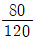
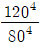
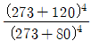
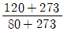
(정답률: 알수없음)
19. 완전가스의 내부에너지(u)는 어떤 함수 인가? (문제 오류로 정답이 정확하지 않습니다. 정답지를 찾지못하여 임의 정답 1번으로 설정하였습니다. 정답을 아시는 분께서는 오류 신고를 통하여 정답 입력 부탁 드립니다.)
- 압력과 온도의 함수이다.
- 압력만의 함수이다.
- 체적과 압력의 함수이다.
- 온도만의 함수이다.
(정답률: 알수없음)
20. 다음 중 열역학적 상태량(property)에 관한 설명으로 틀린 것은? (문제 오류로 정답이 정확하지 않습니다. 정답지를 찾지못하여 임의 정답 1번으로 설정하였습니다. 정답을 아시는 분께서는 오류 신고를 통하여 정답 입력 부탁 드립니다.)
- 온도, 부피, 엔트로피, 비열은 모두 상태량이다.
- 열과 일은 열역학적 상태량이 아니다.
- 상태량은 정항수로서 경로에 무관하다.
- 과열증기의 상태는 1개의 상태랑으로 완전히 결정할 수 있다.
(정답률: 알수없음)
2과목: 냉동공학
21. 물의 빙정과 비등점 사이에서 역카르노 사이클로 작동되는 냉동기와 열펌프의 성적계수는 각각 다음 중 어느 것인가? (문제 오류로 정답이 정확하지 않습니다. 정답지를 찾지못하여 임의 정답 1번으로 설정하였습니다. 정답을 아시는 분께서는 오류 신고를 통하여 정답 입력 부탁 드립니다.)
- 냉동기(εc) : 1.00, 열펌프(εH) : 2.00
- 냉동기(εc) : 2.73, 열펌프(εH) : 3.73
- 냉동기(εc) : 3.52, 열펌프(εH) : 5.43
- 냉동기(εc) : 0.93, 열펌프(εH) : 0.82
(정답률: 알수없음)
22. 냉각수 입구온도가 32°C, 출구온도가 37℃ 그리고 냉각수량이 100ℓ/min인 수냉식 응축기가 있다. 이때 압축기에 사용되는 동력이 8 kW 이면 이 냉동장치의 냉동능력은 약 몇 RT 인가? (문제 오류로 정답이 정확하지 않습니다. 정답지를 찾지못하여 임의 정답 1번으로 설정하였습니다. 정답을 아시는 분께서는 오류 신고를 통하여 정답 입력 부탁 드립니다.)
- 7
- 9
- 11
- 13
(정답률: 알수없음)
23. 내부지름이 2cm이고 외부지름이 4cm인 강철관을 3cm 두께의 석면으로 씌웠다면 관의 길이당 열손실은? (단, 관내부 온도 600℃, 석면 바깥면 온도 100℃, 관 열전도도 16.34kcal/mh℃, 석면 열전도도 0.1264kcal/mh℃이다) (문제 오류로 정답이 정확하지 않습니다. 정답지를 찾지못하여 임의 정답 1번으로 설정하였습니다. 정답을 아시는 분께서는 오류 신고를 통하여 정답 입력 부탁 드립니다.)
- 430.85 kcal/hㆍm
- 439.85 kcal/hㆍm
- 410.52 kcal/hㆍm
- 510.52 kcal/hㆍm
(정답률: 알수없음)
24. 냉동장치의 윤활 목적에 해당되지 않는 것은?
- 마모방지
- 패킹재료 보호
- 냉매 누설방지
- 동력손실 증대
(정답률: 알수없음)
25. 증발압력이 낮아졌을 때에 관한 설명 중 옳은 것은?
- 냉동능력이 증가한다.
- 압축기의 체적효율이 증가한다.
- 압축기의 토출가스 온도가 상승한다.
- 냉매 순환량이 증가한다.
(정답률: 알수없음)
26. 다음 중 터보압축기의 용량(능력)제어 방법이 아닌 것은? (문제 오류로 정답이 정확하지 않습니다. 정답지를 찾지못하여 임의 정답 1번으로 설정하였습니다. 정답을 아시는 분께서는 오류 신고를 통하여 정답 입력 부탁 드립니다.)
- 회전속도에 의한 제어
- 흡입 댐퍼(damper)에 의한 제어
- 부스터(booster)에 의한 제어
- 베인 댐퍼(vane damper)에 의한 제어
(정답률: 알수없음)
27. 냉매로서 필요한 조건 중 맞는 것은?
- 증발 압력이 낮을 것
- 표면장력이 클 것
- 증발 잠열이 클 것
- 점성이 클 것
(정답률: 알수없음)
28. 냉동장치에서 공기가 들어 있음을 무엇을 보고 알 수 있는가? (문제 오류로 정답이 정확하지 않습니다. 정답지를 찾지못하여 임의 정답 1번으로 설정하였습니다. 정답을 아시는 분께서는 오류 신고를 통하여 정답 입력 부탁 드립니다.)
- 응축기에서 소리가 난다.
- 응축기 온도가 떨어진다.
- 토출온도가 높다.
- 증발압력이 낮아진다.
(정답률: 알수없음)
29. 냉동용 압축기를 냉동법의 원리에 의해 분류할 때, 저온에서 증발한 가스를 압축기로 압축하여 고온으로 이동시키는 냉동법은 다음 중 어느 것인가? (문제 오류로 정답이 정확하지 않습니다. 정답지를 찾지못하여 임의 정답 1번으로 설정하였습니다. 정답을 아시는 분께서는 오류 신고를 통하여 정답 입력 부탁 드립니다.)
- 화학식 냉동법
- 기계식 냉동법
- 흡착식 냉동법
- 전자식 냉동법
(정답률: 알수없음)
30. 응축압력 및 증발압력이 일정할 때 압축기의 흡입증기 과열도가 크게 된 경우의 설명 중 옳은 것은? (문제 오류로 정답이 정확하지 않습니다. 정답지를 찾지못하여 임의 정답 1번으로 설정하였습니다. 정답을 아시는 분께서는 오류 신고를 통하여 정답 입력 부탁 드립니다.)
- 증발기의 냉동효과는 증대한다.
- 냉매 순환량이 증대한다.
- 압축기의 토출가스 온도가 상승한다.
- 압축기의 체적효율은 변하지 않는다.
(정답률: 알수없음)
31. 불응축가스를 제거하는 역할을 하는 장치는? (문제 오류로 정답이 정확하지 않습니다. 정답지를 찾지못하여 임의 정답 1번으로 설정하였습니다. 정답을 아시는 분께서는 오류 신고를 통하여 정답 입력 부탁 드립니다.)
- 중간냉각기
- 가스퍼져
- 제상장치
- 여과기
(정답률: 알수없음)
32. 흡수식 냉동기의 용량제어 방법으로 옳지 않은 것은? (문제 오류로 정답이 정확하지 않습니다. 정답지를 찾지못하여 임의 정답 1번으로 설정하였습니다. 정답을 아시는 분께서는 오류 신고를 통하여 정답 입력 부탁 드립니다.)
- 흡수기 공급흡수제 조절
- 재생기 공급용액량 조절
- 재생기 공급증기 조절
- 응축수량 조절
(정답률: 알수없음)
33. 인버터 구동 가변 용량형 공기조화장치나 증발온도가 낮은 냉동장치에서 팽창밸브의 냉매유량 조절 특성 향상과 유량제어 범위 확대 등을 목적으로 사용하는 것은? (문제 오류로 정답이 정확하지 않습니다. 정답지를 찾지못하여 임의 정답 1번으로 설정하였습니다. 정답을 아시는 분께서는 오류 신고를 통하여 정답 입력 부탁 드립니다.)
- 전자식 팽창밸브
- 오세관
- 플로트 팽창밸브
- 정압식 팽창밸브
(정답률: 알수없음)
34. 다음 중 공기냉각용 증발기에 속하는 것은?
- 관코일 증발기
- 건식 셸 앤 튜브 증발기
- 헤링본식 증발기
- 만액식 셸 앤 튜브 증발기
(정답률: 알수없음)
35. 정답지를 찾지못하여 임의 정답 1번으로 설정하였습니다. 정답을 아시는 분께서는 오류 신고를 통하여 정답 입력 부탁 드립니다.)
- 팽창 탱크는 저압측에 설치하는 안전장치이다.
- 고압측과 저압측에 사용하는 윤활유는 동일하다.
- 일반적으로 저온측에 사용하는 냉매는 R-12, R-22, 프로판 등이다.
- 일반적으로 고온측에 사용하는 냉매는 R-13, R-14 등이다.
(정답률: 알수없음)
36. 아이스크림 등을 제조할 때 혼합원료에 공기를 포함시켜서 얼리는 동결장치는? (문제 오류로 정답이 정확하지 않습니다. 정답지를 찾지못하여 임의 정답 1번으로 설정하였습니다. 정답을 아시는 분께서는 오류 신고를 통하여 정답 입력 부탁 드립니다.)
- 후리져(freezer)
- 스크류 콘베어
- 하드닝 터널
- 동결 건조기(freeze drying)
(정답률: 알수없음)
37. 다음 중 열원에 따른 열펌프의 종류가 잘못된 것은?
- 공기-공기 열펌프
- 잠열 이용 열펌프
- 태양열 이용 열펌프
- 물-공기 열펌프
(정답률: 알수없음)
38. 흡수식 냉동장치에서의 흡수제 유동방향으로 적당하지 않은 것은? (문제 오류로 정답이 정확하지 않습니다. 정답지를 찾지못하여 임의 정답 1번으로 설정하였습니다. 정답을 아시는 분께서는 오류 신고를 통하여 정답 입력 부탁 드립니다.)
- 흡수기→재생기→흡수기
- 흡수기→용액열교환기→재생기→용액열교환기→흡수기
- 흡수기→고온재생기→저온재생기→흡수기
- 흡수기→재생기→증발기→옹축기→흡수기
(정답률: 알수없음)
39. 섭씨 -15℃ 는 절대온도 약 몇 k 인가?
- 258
- 270
- 150
- 153
(정답률: 알수없음)
40. 그림은 냉동사이클을 압력-엔탈피선도에 나타낸 것이다. 이 그림에 대해 올바르게 설명된 것은? (문제 오류로 정답이 정확하지 않습니다. 정답지를 찾지못하여 임의 정답 1번으로 설정하였습니다. 정답을 아시는 분께서는 오류 신고를 통하여 정답 입력 부탁 드립니다.)
- 팽창밸브 출구의 냉매 건조도는 [(h5-h7)/(h6-h7)]이다.
- 증발기 출구에서의 냉매과열도는 엔탈피차 (h1-h6)로 표현된다.
- 응축기 출구에서의 냉매 과냉각도는 엔탈피차 (h3-h5)로 표현된다.
- 냉매순환량은 [냉동능력/(h6-h5)]로 계산할 수 있다.
(정답률: 알수없음)
3과목: 공기조화
41. 다음중출입의 빈도가 잦아 틈새바람에 의한 손실부하가 비교적 큰 경우의 난방방식으로 적합한 것은? (문제 오류로 정답이 정확하지 않습니다. 정답지를 찾지못하여 임의 정답 1번으로 설정하였습니다. 정답을 아시는 분께서는 오류 신고를 통하여 정답 입력 부탁 드립니다.)
- 증기난방
- 온풍난방
- 온수난방
- 복사난방
(정답률: 알수없음)
42. 긱 공조방식과 그 열운반 매체의 연결이 잘못된 것은?
- 단일덕트 방식 - 공기
- 이중덕트 방식 - 물, 공기
- 2관식 팬코일 유닛 방식 - 물
- 바닥설치형 패키지 방식 - 냉매
(정답률: 알수없음)
43. 실내용도 20℃, 상대습도 40%로 유지되는 어느 실의 급기량은 3000m2/h이고, 난방부하(현열)는 9500kal/h 이다. 이때 취출 온도는 약 몇 도인가? (단, 공기의 비중량은 1.2kg/m3, 비열은 0.24kcal/kg℃이다) (문제 오류로 정답이 정확하지 않습니다. 정답지를 찾지못하여 임의 정답 1번으로 설정하였습니다. 정답을 아시는 분께서는 오류 신고를 통하여 정답 입력 부탁 드립니다.)
- 25℃
- 27℃
- 31℃
- 35℃
(정답률: 알수없음)
44. 어떤 방적 공장이 정방실에서 20kW의 모터에 의해 구동되는 정방기가 15대 있을 때 전력에 의한 취득 열량은 약 몇 kcal/h인가? (단, 전동기와 이것에 의해 구동되는 기계가 같은 방에 있으며 전동기의 가동율(Ψ2)은 0.85 이고, 모터 효율(ηm)은 0.9, 소요동력/정격출력(Ψ1)은 0.95이다.)
- 1.3 × 105
- 1.9 × 105
- 2.0 × 105
- 2.3 × 105
(정답률: 알수없음)
45. 실내 공기 상태에 대한 다음 설명 중 옳은 것은? (문제 오류로 정답이 정확하지 않습니다. 정답지를 찾지못하여 임의 정답 1번으로 설정하였습니다. 정답을 아시는 분께서는 오류 신고를 통하여 정답 입력 부탁 드립니다.)
- 유리면 등의 표면에 결로가 생기는 것은 그 표면온도가 실내의 노점온도보다 높게 될 때이다.
- 실내 공기 온도가 높으면 절대습도도 높다.
- 실내공기의 건구 온도와 그 공기의 노점 온도와의 차는 상대습도가 높을수록 작아진다
- 온도가 낮은 공기일수록 많은 수증기를 함유할 수 있다.
(정답률: 알수없음)
46. 다음 중 콜린룸의 공기 청정에 필요한 것은?
- 방화댐퍼(FD)
- 방연댐퍼(SD)
- 고성능 공기필터(HEPA)
- 가이드 베인(guide vane)
(정답률: 알수없음)
47. 냉수 코일설계 기준을 설명한 것 중 옳지 않은 것은? (문제 오류로 정답이 정확하지 않습니다. 정답지를 찾지못하여 임의 정답 1번으로 설정하였습니다. 정답을 아시는 분께서는 오류 신고를 통하여 정답 입력 부탁 드립니다.)
- 코일의 설치는 관이 수평으로 놓이게 한다.
- 수속의 기준 설계 값은 1m/s 전후이다.
- 공기 냉각용 코일의 일 수는 4~8열이 많이 사용된다
- 냉수 입ㆍ출구 온도차는 10℃ 이상으로 한다.
(정답률: 알수없음)
48. 엔탈피 변화가 없는 경우의 열수분비는 얼마인가? (문제 오류로 정답이 정확하지 않습니다. 정답지를 찾지못하여 임의 정답 1번으로 설정하였습니다. 정답을 아시는 분께서는 오류 신고를 통하여 정답 입력 부탁 드립니다.)
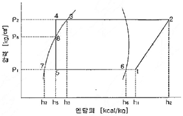
- 0
- 1
- -1
- ∞
(정답률: 알수없음)
49. 물에 의한 보일러 장해 요인이 아닌 것은? (문제 오류로 정답이 정확하지 않습니다. 정답지를 찾지못하여 임의 정답 1번으로 설정하였습니다. 정답을 아시는 분께서는 오류 신고를 통하여 정답 입력 부탁 드립니다.)
- 스케일 부착
- 부식
- 캐리오버
- 전열 촉진
(정답률: 알수없음)
50. 각 층에 1대 또는 여러 대의 공조기롤 설치하는 방법으로 단일덕트의 정풍량 또는 변풍량 방식, 2중 덕트방식 등에 응용할 수 있는 공조방식은? (문제 오류로 정답이 정확하지 않습니다. 정답지를 찾지못하여 임의 정답 1번으로 설정하였습니다. 정답을 아시는 분께서는 오류 신고를 통하여 정답 입력 부탁 드립니다.)
- 각층 유닛 방식
- 유인 유닛 방식
- 복사 냉난방 방식
- 팬코일 유닛 방식
(정답률: 알수없음)
51. 어느 건물의 서쪽의 유리면적이 30m2이다. 안쪽에 크림색의 베니션 블라인드를 설치한 유리면에서의 취득 열량은 몇 kcal/h 인가? (단, 외기는 32℃, 실내는 26℃, 유리의 열통과율은 K = 5.5kcal/m2h℃, 유리창의 복사량은 Igr=450kcal/m2h, 차폐계수 k5=0.74 이다.)
- 990
- 4075
- 9990
- 10980
(정답률: 80%)
52. 증기 난방배관에서 증기트랩을 사용하는 이유로서 옳은 것은? (문제 오류로 정답이 정확하지 않습니다. 정답지를 찾지못하여 임의 정답 1번으로 설정하였습니다. 정답을 아시는 분께서는 오류 신고를 통하여 정답 입력 부탁 드립니다.)
- 관내의 공기를 배출하기 위하여
- 배관의 신축을 흡수하기 위하여
- 관내의 압력을 조절하기 위하여
- 관내의 증기와 응축수를 분리하기 위하여
(정답률: 알수없음)
53. 공작기계인 연삭기로부터 발생되는 분진을 작업장 밖으로 배출시키기 위한 덕트 설계법으로 적당한 것은?
- 등마찰 손실법
- 등속법
- 정압 재취득법
- 전압법
(정답률: 알수없음)
54. 공기세정기 에서 순환수 분무에 대한 설명 중 옳지 않은 것은? (단, 출구 수온은 입구 공기의 습구온도와 같다.)
- 단열변화
- 증발냉각
- 습구온도 일정
- 상대습도 일정
(정답률: 알수없음)
55. 다음 보일러 부속 설비 중ㆍ안전장치가 아닌 것은? (문제 오류로 정답이 정확하지 않습니다. 정답지를 찾지못하여 임의 정답 1번으로 설정하였습니다. 정답을 아시는 분께서는 오류 신고를 통하여 정답 입력 부탁 드립니다.)
- 안전밸브
- 연소안전장치
- 고저수위 경보장치
- 수고계
(정답률: 알수없음)
56. 다음 습공기 선도는 어느 장치에 대응하는 것인가? (단, ①=외기, ②=환기, HC=가열기, CC=냉각기) (문제 오류로 정답이 정확하지 않습니다. 정답지를 찾지못하여 임의 정답 1번으로 설정하였습니다. 정답을 아시는 분께서는 오류 신고를 통하여 정답 입력 부탁 드립니다.)
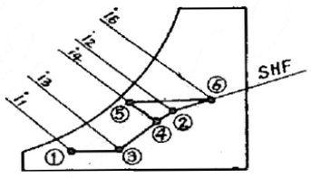
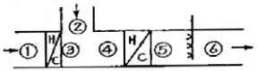
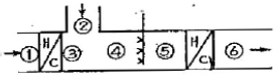
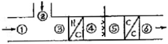
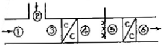
(정답률: 알수없음)
57. 공조설비의 구성은 열원설비, 열운반장치, 공조기, 자동제어장치로 이루어진다. 이에 해당하는 장치로서 직접적인 관계가 없는 것은? (문제 오류로 정답이 정확하지 않습니다. 정답지를 찾지못하여 임의 정답 1번으로 설정하였습니다. 정답을 아시는 분께서는 오류 신고를 통하여 정답 입력 부탁 드립니다.)
- 펌프
- 덕트
- 스프링 쿨러
- 냉동기
(정답률: 알수없음)
58. 다음 설명에 있어서 ( )안에 적당한 용어로 옳은 것은? (문제 오류로 정답이 정확하지 않습니다. 정답지를 찾지못하여 임의 정답 1번으로 설정하였습니다. 정답을 아시는 분께서는 오류 신고를 통하여 정답 입력 부탁 드립니다.)
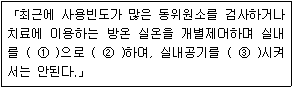
- ① 정(+)압, ② 국소량배기, ③ 배기
- ① 부(-)압, ② 전량배기, ③ 재순환
- ① 정(+)압, ② 전량배기, ③ 배기
- ① 부(-)압, ② 1/3배기, ③ 재순환
(정답률: 알수없음)
59. 잠열 축열장치에서 잠열 축열재가 갖추어야 할필요한 조건으로 맞는 것은? (문제 오류로 정답이 정확하지 않습니다. 정답지를 찾지못하여 임의 정답 1번으로 설정하였습니다. 정답을 아시는 분께서는 오류 신고를 통하여 정답 입력 부탁 드립니다.)
- 융해열이 작을 것
- 과냉각이 작고 상분리를 일으키지 않을 것
- 단기간 화학적으로 안정할 것
- 가격이 비쌀 것
(정답률: 알수없음)
60. 화력발전설비에서 생산된 전력을 이용함과 동시에 전력이 생산되는 과정에서 발생되는 열을 난방 등에 이용하는 방식은? (문제 오류로 정답이 정확하지 않습니다. 정답지를 찾지못하여 임의 정답 1번으로 설정하였습니다. 정답을 아시는 분께서는 오류 신고를 통하여 정답 입력 부탁 드립니다.)
- 히트펌프 (heat pump) 방식
- 가스엔진 구동형 히트펌프 방식
- 열병합발전(co-generation) 방식
- 지열 방식
(정답률: 알수없음)
4과목: 전기제어공학
61. 그림에서 A정의 전위가 100[V], D점의 전위가 60[V] 일 때 BD 사이의 전위차 VBD는? (단, 저항의 단위는 모두 [Ω]이다.) (문제 오류로 정답이 정확하지 않습니다. 정답지를 찾지못하여 임의 정답 1번으로 설정하였습니다. 정답을 아시는 분께서는 오류 신고를 통하여 정답 입력 부탁 드립니다.)
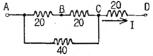
- 10[V]
- 20[V]
- 30[V]
- 40[V]
(정답률: 알수없음)
62. 유도전동기의 속도제어 방법이 아닌 것은?
- 극수변환법
- 2차여자제어법
- 전원전압제어법
- 역률제어법
(정답률: 알수없음)
63. 유효전력이 80[W] 무효전력이 60[Var]인 회로의 역률은? (문제 오류로 정답이 정확하지 않습니다. 정답지를 찾지못하여 임의 정답 1번으로 설정하였습니다. 정답을 아시는 분께서는 오류 신고를 통하여 정답 입력 부탁 드립니다.)
- 60[%]
- 80[%]
- 90[%]
- 100[%]
(정답률: 알수없음)
64. 제어량을 원하는 상태로 하기 위한 입력신호는? (문제 오류로 정답이 정확하지 않습니다. 정답지를 찾지못하여 임의 정답 1번으로 설정하였습니다. 정답을 아시는 분께서는 오류 신고를 통하여 정답 입력 부탁 드립니다.)
- 제어명령
- 작업명령
- 명령처리
- 신호처리
(정답률: 알수없음)
65. 자장안에 놓여 있는 도선에 전류가 흐를 때 도선이 받는 힘 F=8Iℓsinθ[N] 이다. 이것을 설명하는 법칙과 응용기기가 맞게 짝지어진 것은? (문제 오류로 정답이 정확하지 않습니다. 정답지를 찾지못하여 임의 정답 1번으로 설정하였습니다. 정답을 아시는 분께서는 오류 신고를 통하여 정답 입력 부탁 드립니다.)
- 플레밍의 오른손법칙 - 발전기
- 플레밍의 왼손법칙 - 전동기
- 플레밍의 왼손법칙 - 발전기
- 플레밍의 오른손법칙 - 전동기
(정답률: 알수없음)
66. 다음중 정류기의 평활회로에 이용되는 것은? (문제 오류로 정답이 정확하지 않습니다. 정답지를 찾지못하여 임의 정답 1번으로 설정하였습니다. 정답을 아시는 분께서는 오류 신고를 통하여 정답 입력 부탁 드립니다.)
- 고역필터
- 저역필터
- 대역통과필터
- 대역소거필터
(정답률: 알수없음)
67. 논리식
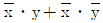
를 간단히 하면? (문제 오류로 정답이 정확하지 않습니다. 정답지를 찾지못하여 임의 정답 1번으로 설정하였습니다. 정답을 아시는 분께서는 오류 신고를 통하여 정답 입력 부탁 드립니다.)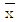
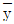
- x + y
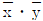
(정답률: 알수없음)
68. 그림과 같은 계전기 접점회로의 논리식은? (문제 오류로 정답이 정확하지 않습니다. 정답지를 찾지못하여 임의 정답 1번으로 설정하였습니다. 정답을 아시는 분께서는 오류 신고를 통하여 정답 입력 부탁 드립니다.)
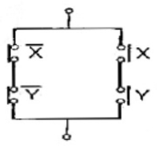
- XㆍY
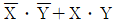
- X+Y
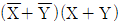
(정답률: 알수없음)
69. 그림과 같은 신호흐름선도에서 C/R 는? (문제 오류로 정답이 정확하지 않습니다. 정답지를 찾지못하여 임의 정답 1번으로 설정하였습니다. 정답을 아시는 분께서는 오류 신고를 통하여 정답 입력 부탁 드립니다.)
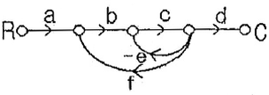
- abcd/(1+ce+bcf)
- abcd/(1-ce+bcf)
- abcd/(1+ce-bcf)
- abcd/(1-ce-bcf)
(정답률: 알수없음)
70. SCR에 대한 설명으로 틀린 것은? (문제 오류로 정답이 정확하지 않습니다. 정답지를 찾지못하여 임의 정답 1번으로 설정하였습니다. 정답을 아시는 분께서는 오류 신고를 통하여 정답 입력 부탁 드립니다.)
- PNPN 소자이다.
- 스위칭 소자이다.
- 쌍방향성 사이리스터이다.
- 직류, 교류의 전력제어용으로 사용된다.
(정답률: 알수없음)
71. 다음중 공정제어(프로세스 제어)에 속하지 않는 제어량은? (문제 오류로 정답이 정확하지 않습니다. 정답지를 찾지못하여 임의 정답 1번으로 설정하였습니다. 정답을 아시는 분께서는 오류 신고를 통하여 정답 입력 부탁 드립니다.)
- 온도
- 압력
- 유량
- 방위
(정답률: 알수없음)
72. 어떤 저항에 100[V] 의 전압을 공급하니 2[A] 의 전류가 흐르고 300[cal]의 열량이 발생할 경우 전류가 흐른 시간은 약 몇 초 인가? (문제 오류로 정답이 정확하지 않습니다. 정답지를 찾지못하여 임의 정답 1번으로 설정하였습니다. 정답을 아시는 분께서는 오류 신고를 통하여 정답 입력 부탁 드립니다.)
- 1.5초
- 3.0초
- 6.3초
- 12.5초
(정답률: 알수없음)
73. 그림과 같은 피드백 제어계의 페루프 전달함수 C(S)/R(S)는?
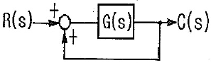
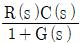
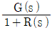
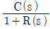
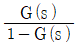
(정답률: 알수없음)
74. 그림과 같은 미터 브리지가 R=10[kΩ]. X=30[kΩ]에서 평형되었다. L1과 L2의 합이 100[cm] 일 때 I1의 길이는? (문제 오류로 정답이 정확하지 않습니다. 정답지를 찾지못하여 임의 정답 1번으로 설정하였습니다. 정답을 아시는 분께서는 오류 신고를 통하여 정답 입력 부탁 드립니다.)
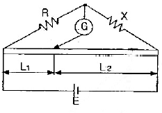
- 25[cm]
- 33[cm]
- 66[cm]
- 75[cm]
(정답률: 알수없음)
75. PLC(Programmable Logic Controller)에 대한 설명 중 틀린 것은?
- 무접점 제어방식이다.
- 계전기, 타이머, 카운터의 기능까지 쉽게 프로그램 할 수 있다.
- 산술연산, 비교연산을 처리할 수 있다.
- 시퀀스제어 방식과는 함께 사용할 수 없다.
(정답률: 알수없음)
76. 빛의 양(조도)에 의해서 동작되는 CdS를 이용한 센서에 해당하는 것은? (문제 오류로 정답이 정확하지 않습니다. 정답지를 찾지못하여 임의 정답 1번으로 설정하였습니다. 정답을 아시는 분께서는 오류 신고를 통하여 정답 입력 부탁 드립니다.)
- 저항 변화형
- 인덕턴스 변화형
- 용량 변화형
- 전압 변화형
(정답률: 알수없음)
77. 정답지를 찾지못하여 임의 정답 1번으로 설정하였습니다. 정답을 아시는 분께서는 오류 신고를 통하여 정답 입력 부탁 드립니다.)
- K
- K(1+ST)
- K(1+1/ST)
- K(1+ST+1/ST)
(정답률: 알수없음)
78. 비행기 등과 같은 움직이는 목표값의 위치를 알아보기 위한 즉, 원뿔주사를 이용한 서보용 제어기는? (문제 오류로 정답이 정확하지 않습니다. 정답지를 찾지못하여 임의 정답 1번으로 설정하였습니다. 정답을 아시는 분께서는 오류 신고를 통하여 정답 입력 부탁 드립니다.)
- 자동조타장치
- 추적레이다
- 공작기계의 제어
- 자동평형기록계
(정답률: 알수없음)
79. 어떤 회로에 정현파 전압을 가하니 90° 위상이 뒤진 전류가 흘렀다면 이 회로의 부하는? (문제 오류로 정답이 정확하지 않습니다. 정답지를 찾지못하여 임의 정답 1번으로 설정하였습니다. 정답을 아시는 분께서는 오류 신고를 통하여 정답 입력 부탁 드립니다.)
- 저항
- 용량성
- 무부하
- 유도성
(정답률: 알수없음)
80. 비례적분 동작은 제어가 지연되는 경향이 있다. 이것을 보완하기 위하여 미분동작을 부가시켜 제어를 빠르게 하는 제어동작은? (문제 오류로 정답이 정확하지 않습니다. 정답지를 찾지못하여 임의 정답 1번으로 설정하였습니다. 정답을 아시는 분께서는 오류 신고를 통하여 정답 입력 부탁 드립니다.)
- P 동작
- PI 동작
- PD 동작
- PID 동작
(정답률: 알수없음)
5과목: 배관일반
81. 다음 중 관의 지지 금속 설치 시공시 고려해야 할 사항이 아닌 것은?
- 관의 신축
- 배관 구배의 조절
- 배관 중량
- 관내 수용 물질
(정답률: 알수없음)
82. 유체의 입구와 출구방향이 직각으로 되어 있어 유체의 흐름 방향은 90° 변환시키는 밸브는? (문제 오류로 정답이 정확하지 않습니다. 정답지를 찾지못하여 임의 정답 1번으로 설정하였습니다. 정답을 아시는 분께서는 오류 신고를 통하여 정답 입력 부탁 드립니다.)
- 앵글밸브
- 게이트밸브
- 첵밸브
- 볼밸브
(정답률: 알수없음)
83. 5층 건물에 압력수조식으로 급수하고자 한다. 5층 말단에 일반 대변기(세정밸브)를 설치할 경우 압력수조 출구의 압력을 어느 정도 하여야 하는가? (단, 압력수조에서 대변기까지의 수직높이는 15m이고 압력수조에서 대변기까지의 마찰손실수두는 4mAq, 일반 대변기(세정밸브) 필요 최소압력은 0.7kg/cm2 이다.) (문제 오류로 정답이 정확하지 않습니다. 정답지를 찾지못하여 임의 정답 1번으로 설정하였습니다. 정답을 아시는 분께서는 오류 신고를 통하여 정답 입력 부탁 드립니다.)
- 04 kg/cm2
- 1.5 kg/cm2
- 2.2 kg/cm2
- 2.6 kg/cm2
(정답률: 알수없음)
84. 두개의 90° 엘보와 직관길이 ℓ=262mm인 관이 그림처럼 연결되어 있다. L=300mm이고 관 규격이 20A이며 엘보의 중심에서 단면까지의 길이 A=32mm일 때 물린 부분 B의 길이는 몇 mm인가?
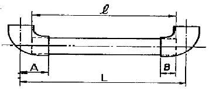
- 12
- 13
- 14
- 15
(정답률: 알수없음)
85. 보온재 중 사용온도 범위가 가장 높은 것은? (문제 오류로 정답이 정확하지 않습니다. 정답지를 찾지못하여 임의 정답 1번으로 설정하였습니다. 정답을 아시는 분께서는 오류 신고를 통하여 정답 입력 부탁 드립니다.)
- 규조토 보온재
- 임면 보온재
- 탄산마그네슘 보은재
- 펄라이트 보온재
(정답률: 알수없음)
86. 관에 관한 설명 중 틀린 것은? (문제 오류로 정답이 정확하지 않습니다. 정답지를 찾지못하여 임의 정답 1번으로 설정하였습니다. 정답을 아시는 분께서는 오류 신고를 통하여 정답 입력 부탁 드립니다.)
- 강관은 주철관이나 납관에 비해 가볍다.
- 주철관은 내식성이 강해 지하 매설시 부식이 적다.
- 도관은 내산 및 내알칼리성이 우수하고 내마모성이 있다.
- 연관은 알칼리성에는 내식성이 강하여 신축에 잘 견딘다.
(정답률: 알수없음)
87. 프레온 냉매배관에 관한 설명 중 잘못된 것은? (문제 오류로 정답이 정확하지 않습니다. 정답지를 찾지못하여 임의 정답 1번으로 설정하였습니다. 정답을 아시는 분께서는 오류 신고를 통하여 정답 입력 부탁 드립니다.)
- 압축기에서 배관으로 토출된 윤활유는 장치내를 순환하여 반드시 소랑씩 연속적으로 압축기로 돌아오게 한다.
- 만액식 증발기를 제외하고 일반적인 증발기에는 운전중 또는 운전정지 중에 대량의 냉매액이 고이지 않게 한다.
- 모든 배관은 마찰손실이 큰 것이 바람직하여 루프, 엘보. 밸브 등을 많이 설치하는 것이 편리하다.
- 다수의 기기를 조합하여 사용하는 경우에는 각 기기에 냉매가 적당하게 흘러 최고의 효율이 발휘되도록 한다.
(정답률: 알수없음)
88. 폴리에틸렌관의 접합방법으로 관끝의 외면과 이음쇠의 내면을 동시에 가열하여 이용하는 방법은? (문제 오류로 정답이 정확하지 않습니다. 정답지를 찾지못하여 임의 정답 1번으로 설정하였습니다. 정답을 아시는 분께서는 오류 신고를 통하여 정답 입력 부탁 드립니다.)
- 인서트 이음
- 테이퍼 코어 이음
- 용착 이음
- TS 이음
(정답률: 알수없음)
89. 복사난방 배관에서 코일의 구배로 옳은 것은? (문제 오류로 정답이 정확하지 않습니다. 정답지를 찾지못하여 임의 정답 1번으로 설정하였습니다. 정답을 아시는 분께서는 오류 신고를 통하여 정답 입력 부탁 드립니다.)
- 상향식 : 올림구배, 하향식 : 올림구배
- 상향식 : 내림구배, 하향식 : 올림구배
- 상향식 : 내림구배, 하향식 : 내림구배
- 상향식 : 올림구배, 하향식 : 내림구배
(정답률: 알수없음)
90. 배관 용접 작업 중 다음과 같은 결함을 무엇이라고 하는가? (문제 오류로 정답이 정확하지 않습니다. 정답지를 찾지못하여 임의 정답 1번으로 설정하였습니다. 정답을 아시는 분께서는 오류 신고를 통하여 정답 입력 부탁 드립니다.)
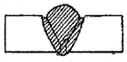
- 용입불량
- 언더컷
- 오버랩
- 피트
(정답률: 알수없음)
91. 다음 중 중앙식 급탕법의 특징이 아닌 것은? (문제 오류로 정답이 정확하지 않습니다. 정답지를 찾지못하여 임의 정답 1번으로 설정하였습니다. 정답을 아시는 분께서는 오류 신고를 통하여 정답 입력 부탁 드립니다.)
- 저탕량이 많으므로 피크 로드에 대응할 수 있다.
- 열원에 중유, 석탄 등의 값싼 것을 사용할 수 있다.
- 다른 설비 기계류와 동일한 장소에 설치되므로 관리가 용이하다.
- 급탕개소가 적을 경우에는 설비비가 싸다.
(정답률: 알수없음)
92. 냉동 장치의 냉매 배관에 관한 설명으로 틀린 것은? (문제 오류로 정답이 정확하지 않습니다. 정답지를 찾지못하여 임의 정답 1번으로 설정하였습니다. 정답을 아시는 분께서는 오류 신고를 통하여 정답 입력 부탁 드립니다.)
- 사용하는 배관 재료와 관 두께는 냉매의 종류, 사용 온도 및 압력에 적합한 것을 사용한다.
- 압축기와 응축기가 동일선상에 있는 경우의 수평관은 1/50의 올림 구배로 한다.
- 토출관 및 흡입 가스관은 냉매에 혼합되어 순환되는 냉동기의 기름이 계통내에 체류하는 일이 없이 압축기에 돌아오도록 한다.
- 배관의 진동을 방지하고 적당한 간격으로 적합한 지지용 받침대를 설치한다.
(정답률: 알수없음)
93. 가스 배관 시공상의 주의 사항으로 잘못된 것은? (문제 오류로 정답이 정확하지 않습니다. 정답지를 찾지못하여 임의 정답 1번으로 설정하였습니다. 정답을 아시는 분께서는 오류 신고를 통하여 정답 입력 부탁 드립니다.)
- 건축물의 벽을 관통하는 부분의 배관에는 보호관 및 부식방지 피복을 한다.
- 건물 내의 배관은 외부에 노출 시켜 시공한다.
- 지하에 매설하는 배관은 기계적 이음 또는 나사 이음을 원칙으로 하고 가능한 한 용접시공을 피한다.
- 배관의 경로와 위치는 안전성, 시공성, 장래의 계획 등을 고려하여 정한다.
(정답률: 알수없음)
94. 급수설비에서 발생하기 쉬운 수격 작용에 대한 설명으로 틀린 것은? (문제 오류로 정답이 정확하지 않습니다. 정답지를 찾지못하여 임의 정답 1번으로 설정하였습니다. 정답을 아시는 분께서는 오류 신고를 통하여 정답 입력 부탁 드립니다.)
- 플러쉬 밸브 또는 급속개폐식 수전 사용시 많이 발생된다.
- 평시 수압이 2kg/cm2이라면 수격작용 발생시에는 14kg/cm2 이상의 이상 압력이 발생한다.
- 수격작용의 방지법으로는 급폐쇄형 밸브 근처에 공기실을 설치하는 방법이 많이 이용된다.
- 과대한 수격작용은 배관 밸브와 기기 이용쇠를 진동 시키고 충격음을 발생시킨다.
(정답률: 알수없음)
95. 급탕배관시 주의사항으로 잃지 않은 것은?
- 구배는 중력순환식인 경우 1/150, 강제순환식에서는 1/200로 한다.
- 배관의 굽힘부분에는 스위블 이음으로 접합한다.
- 상향배관인 경우 급탕관은 하향구배로 한다.
- 플랜지에 사용되는 패킹은 내열성재료를 사용한다.
(정답률: 알수없음)
96. 팽창탱크 주위 배관에 관한 설명으로 룔린 것은?
- 개방식 팽창탱크는 시스템의 최상부보다 1m 이상 높게 설치한다.
- 팽창탱크의 급수에는 전동밸브 또는 볼밸브를 이용한다.
- 오버플로관 및 배수관은 간접배수로 한다.
- 팽창관에는 팽창량을 조절할 수 있도록 밸브를 설치한다.
(정답률: 알수없음)
97. 지중에 매설하는 배수관의 관경은 몇 mm 이상으로 해야 하는가? (문제 오류로 정답이 정확하지 않습니다. 정답지를 찾지못하여 임의 정답 1번으로 설정하였습니다. 정답을 아시는 분께서는 오류 신고를 통하여 정답 입력 부탁 드립니다.)
- 10 mm
- 20 mm
- 30 mm
- 50 mm
(정답률: 알수없음)
98. 동일한 특성을 갖는 원심펌프를 병렬로 연결 운전시 증가하는 것은? (단, 배관의 마찰 저항은 무시한다)
- 효율
- 양정
- 유량
- 회전수
(정답률: 알수없음)
99. 옥내 배수관의 평균 유속은 얼마가 적당한가? (문제 오류로 정답이 정확하지 않습니다. 정답지를 찾지못하여 임의 정답 1번으로 설정하였습니다. 정답을 아시는 분께서는 오류 신고를 통하여 정답 입력 부탁 드립니다.)
- 0.6 ~ 1.2m/s
- 2.2 ~ 2.8m/s
- 3.2 ~ 4.3m/s
- 5.3 ~ 6.4m/s
(정답률: 알수없음)
100. 송풍기의 상사법칙 및 특성식에 대한 설명 중 틀린 것은? (문제 오류로 정답이 정확하지 않습니다. 정답지를 찾지못하여 임의 정답 1번으로 설정하였습니다. 정답을 아시는 분께서는 오류 신고를 통하여 정답 입력 부탁 드립니다.)
- 송풍기의 크기가 일정할 때 풍량은 회전속도에 비례 변화한다.
- 송풍기의 크기가 일정할 때 정압은 회전속도의 제곱에 비례 변화한다.
- 회전속도가 일정할 때 풍량은 송풍기 임펠러 지름의 제곱에 비례 변화한다.
- 회전속도가 일정할 때 정압은 송풍기 임펠러 지름의 제곱에 비례 변화한다.
(정답률: 알수없음)
P1V1 = P2V2
20 × 0.1 = 66.67 × 0.3
2 = 2
따라서, 초기와 최종 상태의 내부에너지 변화가 없으므로 일량은 0이다. 따라서, 보기에서 유효한 정답은 없다.